Generated 2026-05-04. Light-mode-only research for a self-hosted, AI-augmented postdoc application tracker. Aesthetic anchor: "calm tools" (Linear, Attio, Notion, Vercel, Cursor) — warmer / more academic, not enterprise-blue.
TL;DR. Build a left-sidebar layout with a dimmed paper-toned sidebar (Linear's March-2026 refresh pattern) and a right-side AI activity drawer that streams agent output (VS Code Agent / Manus / Cursor pattern). Use table + Kanban toggle for the professor list (Huntr-meets-Teal). Inline ✨ action buttons with Accept / Dismiss / Save-for-later for any AI-generated change — never auto-apply. Onboarding is a 3-step wizard with a vertical progress rail (TBR / Stripe pattern).
Linear's March 2026 UI refresh dimmed sidebars to make the content area pop. Adopt the same: paper-tone sidebar (#f5f3ee), brighter content area (#fbfaf7). Single-pixel divider, no shadow.
┌──────────┬────────────────────────────────────┬──────┐ │ AM ▾ │ Home ⏎ │ │ │ │ ─────────────────────────────────│ │ │ ⌂ Home │ │ ✨ │ │ 🔍 Disc. │ Good evening, Amir │ ai │ │ 👥 Profs │ ─ 3 follow-ups due ─ │ on │ │ ✉ Drafts │ ┌────┬────┬────┬────┬────┬────┐ │ │ │ 📤 Batch │ │ 47 │ 23 │ 18 │ 5 │ 3 │ 12%│ │ │ │ 💰 Grants│ │tot │sent│reply│int │off │ rr │ │ │ │ 📁 Docs │ └────┴────┴────┴────┴────┴────┘ │ │ │ 📅 Cal │ │ │ │ 📊 Activ │ Status breakdown By university │ │ │ ⚡ AI │ [stacked bars] [bar list] │ │ │ ⚙ Sett. │ │ │ └──────────┴────────────────────────────────────┴──────┘
Pattern from VS Code Agent + Manus + Cursor: persistent collapsible 400px drawer streaming intermediate steps. Don't hide reasoning the way Devin does — users want to course-correct mid-run.
┌──────────────────┐
│ AI Activity ✕ │
├──────────────────┤
│ ⏳ Researching │
│ Prof Singh @ UofT│
│ ─────────────────│
│ ✓ Found profile │
│ ✓ Fetched lab │
│ ⏳ Summarizing… │
│ ┊ │
│ ┊ "Currently work-│
│ ┊ ing on multi- │
│ ┊ agent RL for…"│
│ │
│ [Cancel] [Hide] │
├──────────────────┤
│ Queue (2) │
│ • Draft email… │
│ • Find grants… │
└──────────────────┘
Huntr's Kanban for triage, Teal's spreadsheet for editing. Same data, single toggle.
┌────────────────────────────────────────────────────────┐ │ Professors [≡ List][▦ Board] │ │ ───────────────────────────────────────────────────── │ │ Filter: [all] tier [all] status [all] uni [all] cat ⌫ │ │ ───────────────────────────────────────────────────── │ │ # Name Uni Tier Status Cat │ │ 47 Prof. Singh UofT T1 drafting ●AV │ │ 46 Prof. Chen McGill T2 sent ●RL │ └────────────────────────────────────────────────────────┘
Contextual sparkle buttons beat a separate "AI mode." Never auto-apply — surface a suggestion chip the user explicitly accepts.
┌─ Edit Professor ─────────────────────────────┐ │ Name Prof. Aisha Singh │ │ University University of Toronto │ │ Email a.singh@cs.toronto.edu ✨ │ │ Lab URL [empty] [✨ Auto-fill]│ │ ↳ ┌──── AI suggestion ─────────┐ │ │ │ https://utml.toronto.edu │ │ │ │ Confidence: 94% │ │ │ │ [ Accept ✓ ] [ Dismiss ✕ ] │ │ │ └────────────────────────────┘ │ └──────────────────────────────────────────────┘
Stripe + TBR pattern: vertical progress rail, single form per step, Continue enabled only when valid.
┌────────────────────────────────────────────────────┐ │ ●─── Welcome │ │ │ │ │ ●─── Bring your work │ │ │ ┌──────────────────────────────────────┐ │ │ │ │ Drop your CV (PDF) here or browse │ │ │ │ │ ────────────────────────────────── │ │ │ │ │ Google Scholar URL [_________] │ │ │ │ │ Personal page URL [_________] │ │ │ │ └──────────────────────────────────────┘ │ │ │ [Skip] [Continue →] │ │ ○─── Review your profile │ └────────────────────────────────────────────────────┘
Spotify-Discover-Weekly meets Superhuman triage: ranked candidate cards with explanation, Accept / Save / Dismiss. Soft-delete on dismiss so we never re-suggest.
┌─ Professor Suggestions (12 new) ──────────────────┐ │ ┌───────────────────────────────────────────────┐ │ │ │ 92% match Prof. Lin Hou MIT T1 ●AV │ │ │ │ ─────────────────────────────────────────────│ │ │ │ "3 papers on adversarial AV in 2024-25; │ │ │ │ co-authored with Prof. Khan in your list" │ │ │ │ [Accept] [Save for later] [Dismiss] │ │ │ └───────────────────────────────────────────────┘ │ └────────────────────────────────────────────────────┘
 Glean — line chart on top, dense activity log below. Information density target. [Lazyweb]
Glean — line chart on top, dense activity log below. Information density target. [Lazyweb]
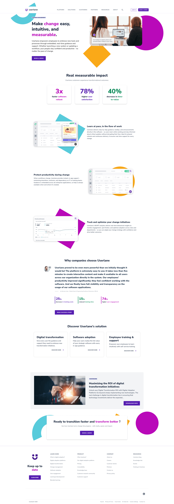
Userlane — flat KPI cards with bar/line charts. Percentages-with-context pattern. [Lazyweb]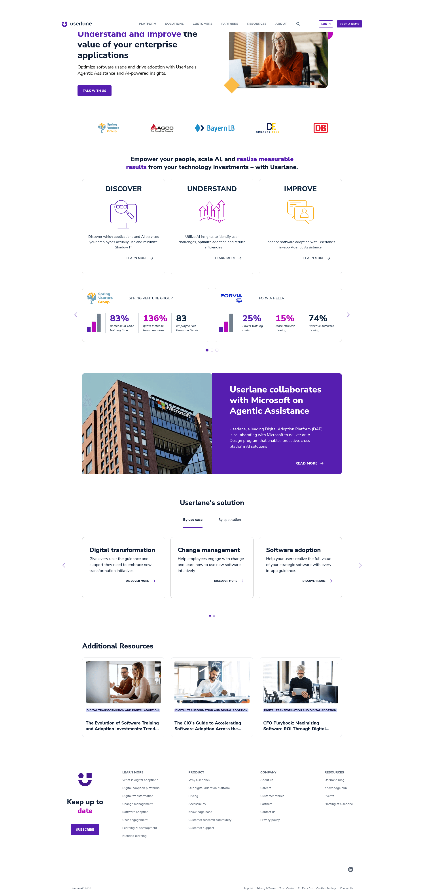
Userlane — segmented progress with collapsible streams. Adapt for drafting → sent → replied pipeline. [Lazyweb]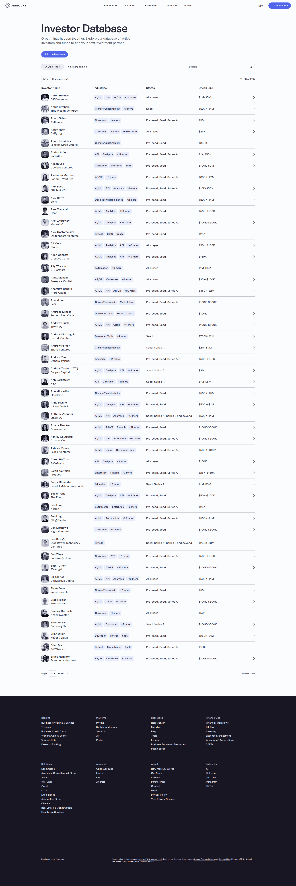
Mercury — searchable, filterable investor table with chips. Columns scannable, no overflow. [Lazyweb]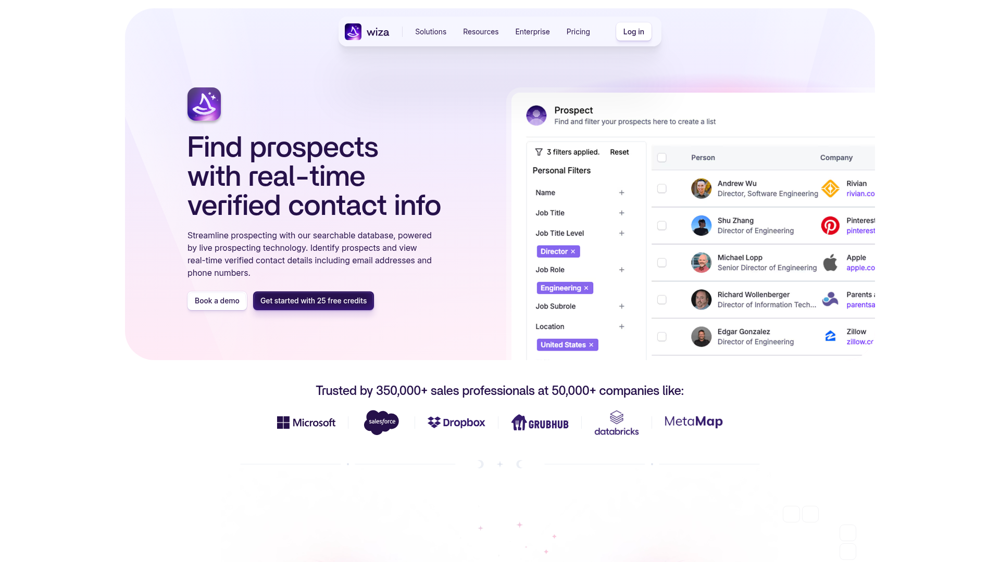
Wiza — search-driven prospect grid with quick-action chips. Discovery inbox card pattern. [Lazyweb]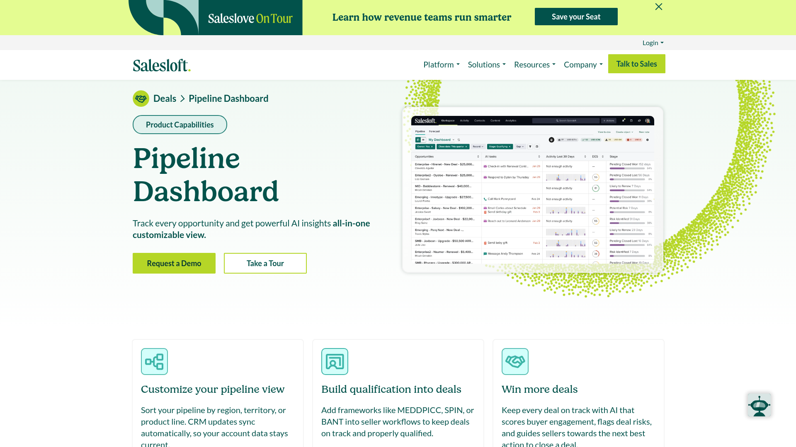
Salesloft — pipeline with AI deal scoring and custom alerts. Closest analog to AI-augmented postdoc pipeline. [Lazyweb]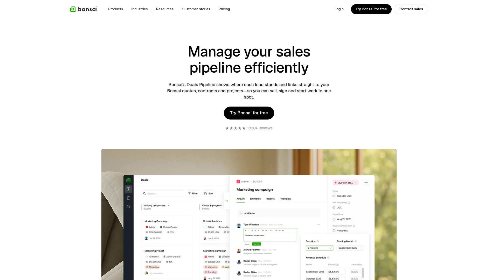
Bonsai — clean 4-stage kanban with deal cards. Direct template for our drafting → sent → replied → interview → offer. [Lazyweb]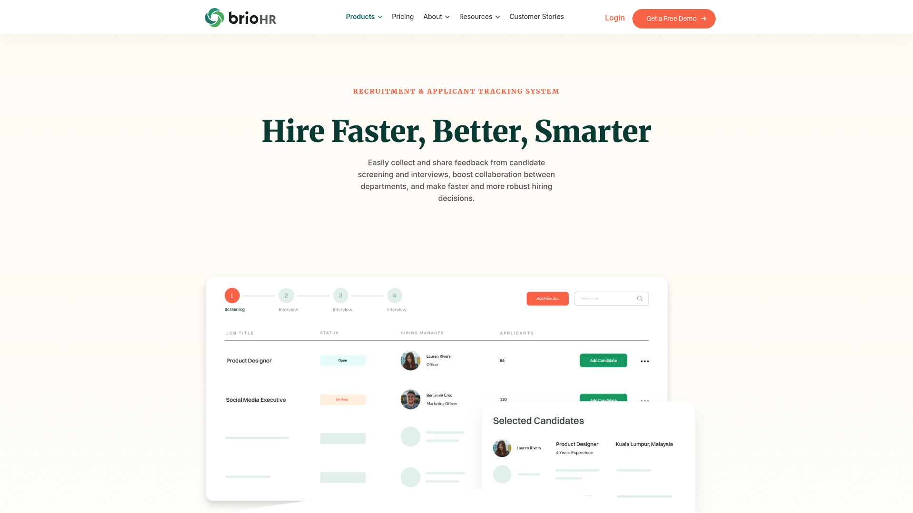
BrioHR — ATS pipeline with stage cards + side preview panel. Split-pane "click row → preview" pattern. [Lazyweb]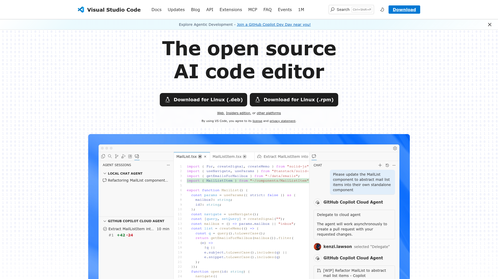
VS Code Agent — right-side chat panel. Drawer width and message density to copy. [Lazyweb]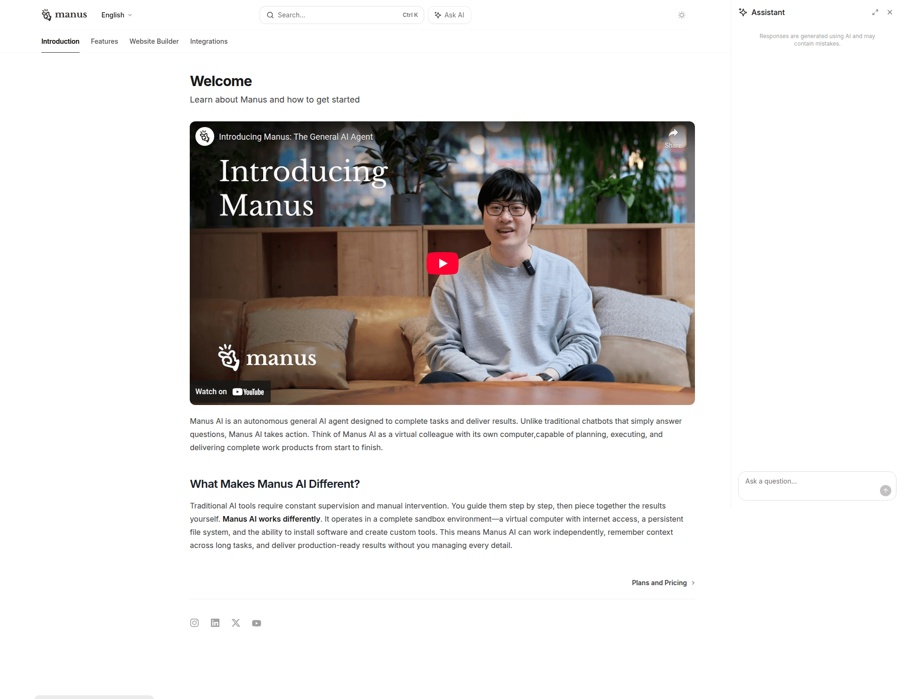
Manus — global "Ask AI" button + persistent right-side AI panel. Exactly our chat sidecar. [Lazyweb] Vibe-Kanban — 4-panel workspace (sidebar / main / right rail / chat). Reference for overall page chrome. [Lazyweb]
Vibe-Kanban — 4-panel workspace (sidebar / main / right rail / chat). Reference for overall page chrome. [Lazyweb]
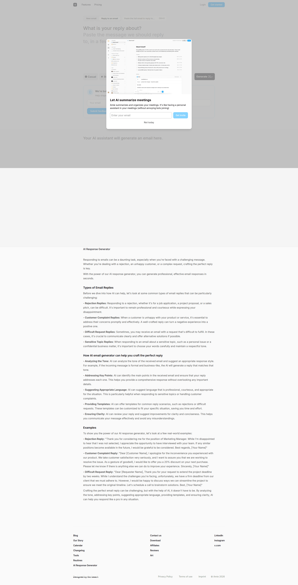
Amie — AI email response generator with email-style preview. Body + tone-variant chip pattern. [Lazyweb]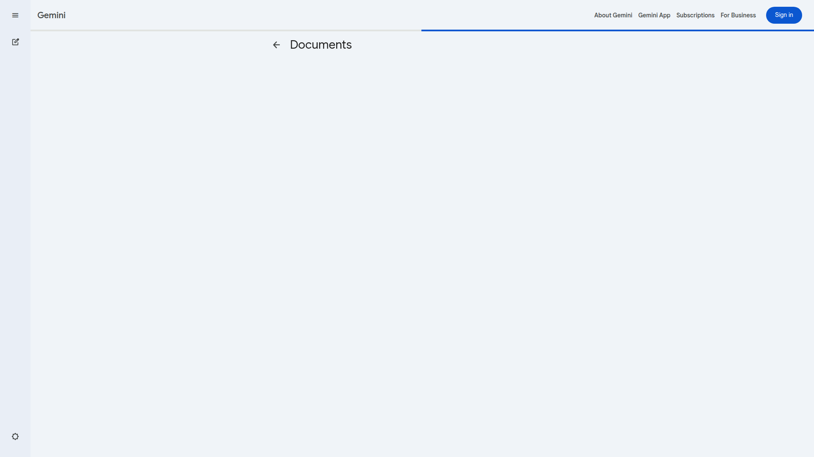
Gemini — minimal documents library with sidebar nav + file list. Restrained, no superfluous chrome. [Lazyweb]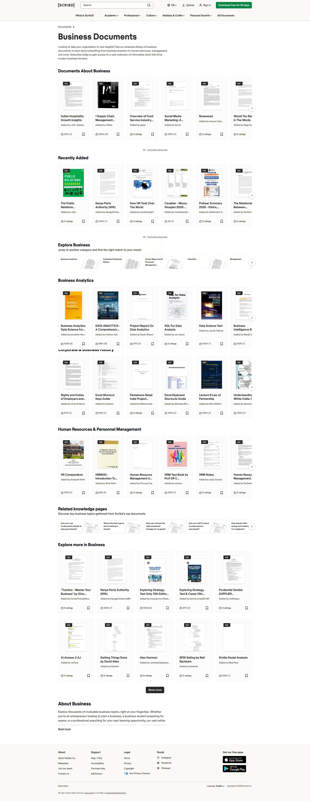
Scribd — PDF-card grid layout. Useful for visual previews (sample papers, CV thumbnails). [Lazyweb]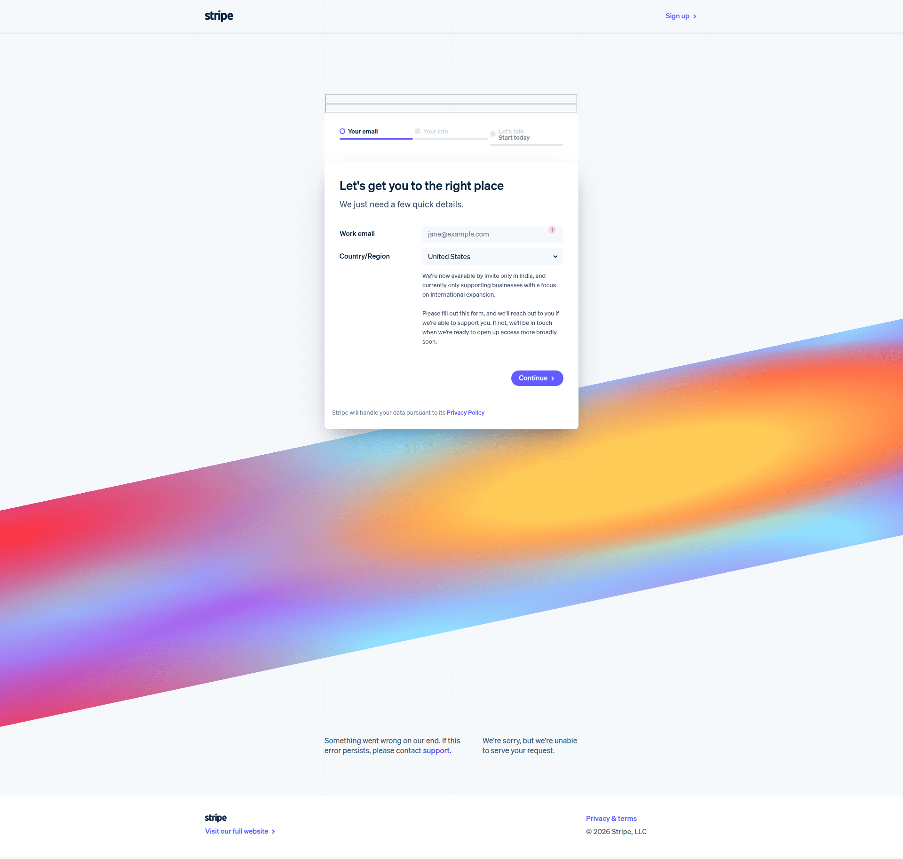
Stripe — multi-step signup with progress bar. Calm, one-thing-per-screen. [Lazyweb]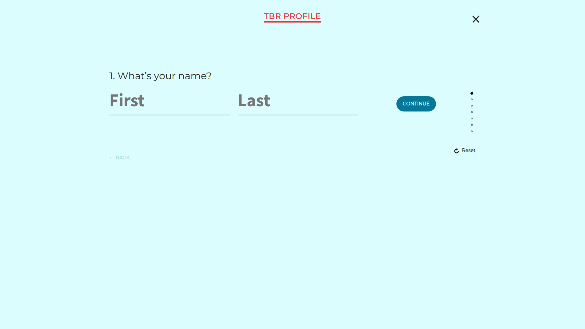
TBR — vertical progress indicator on the left, single form per step. Direct template. [Lazyweb]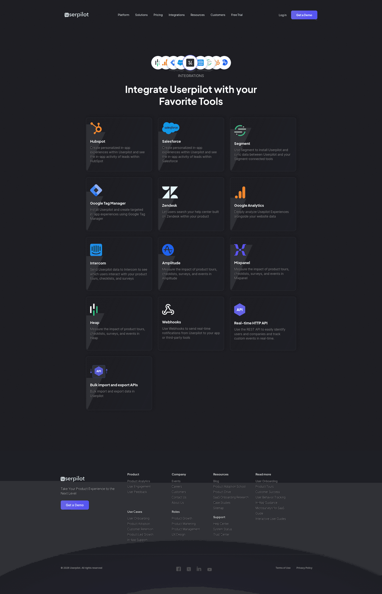
Userpilot — grid of integration tiles with "Connect" CTA. Useful for AI Providers screen. [Lazyweb](no data).Linear is a project-management tool with a team in mind. Our product is single-user, document-heavy, AI-augmented. We borrow Linear's information-density and calm-chrome principles, not their team-collab features (pulse, cycles). Attio's record-page pattern (single contact = full page) may be a better Phase-2 target for the professor view.